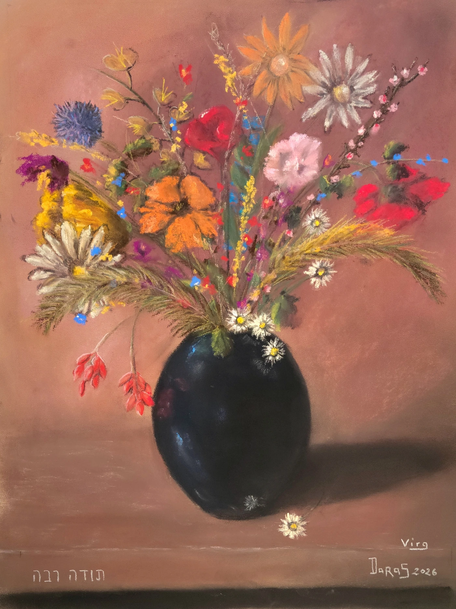

Fleurs
Fleurs dans un vase bleu
Deux regards, quatre mains, une même envie de créer. Réalisé dans la spontanéité, ce pastel est né d'un dialogue entre deux artistes (Virginie Gaubert et Daras), où chaque geste répond à l'autre sans jamais chercher à le dominer. Les fleurs se sont librement invitées dans le vase, mêlant formes, couleurs et lumières. Ce bouquet est une ode à la liberté du geste, à l'imprévu et à la créativité. Une belle rencontre.
Demander des informations →← Retour à la galerie